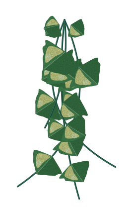

Buku catatan toko
Tips berkebun
Catatan singkat dari nursery kami: soal media tanam, ganti pot, alat, dan cara mulai berkebun tanpa pusing.

Buku catatan toko
Catatan singkat dari nursery kami: soal media tanam, ganti pot, alat, dan cara mulai berkebun tanpa pusing.